User Guide
Getting Started
When initially starting, it is recommended that each individual creates their own account. This is so that the program is able to keep track of users directories and organize notes for each user.
When creating a password, the password will be encrypted with SHA256 and saved in the ‘users.json’ file. When logging in, you will be presented with a screen like this:
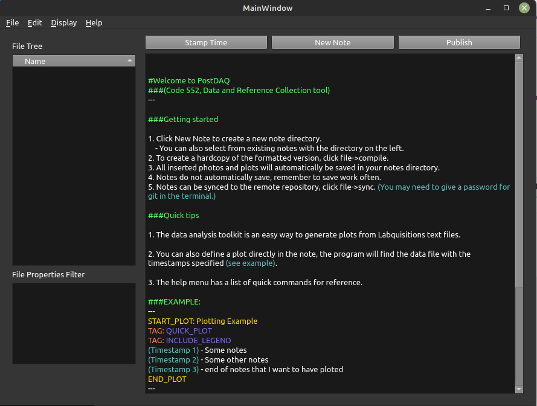The workflow is set up so that when you are ready to begin a new ‘test’, you can define a new note using the ‘New Note’ button. This will allow you to define several tags for your note. This is what determines the directories that will be built for the project.
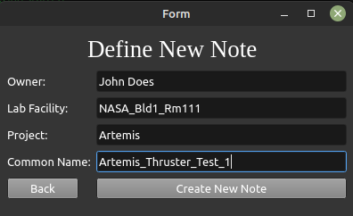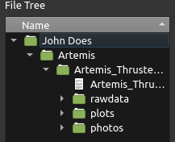
rawdata, plots, and photos. The program will automatically save plots and photos to these directories when they are inserted into the note.
The next step is to set up your data acquisition software (Labquisition in 552’s case) to save data files into the rawdata folder. This is so that the program knows what data to references when using the data analysis features. Saving raw data to this folder has an added benefit if you enable syncing across your testing facilities, as these files will also be carried over.
Note Taking Syntax
The note taking syntax follows a simplified version of the Markdown syntax. Please refer to the jekyll-commonmark documentation for more information on the syntax. Below is an example of some common uses of the syntax. The formatted text can be quickly toggled using the ‘Preview’ button.
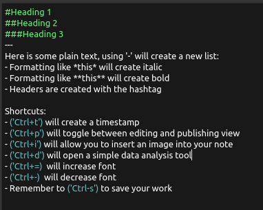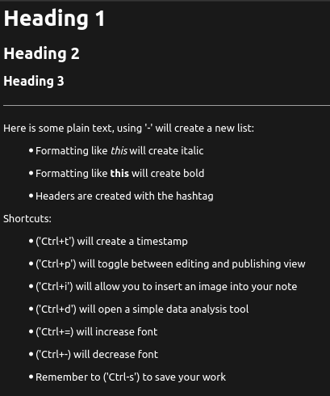
Plotting
The data analysis features are designed to be used both in parallel with note taking, as well as post processing. The program is currently setup to take text files of raw data. When entering the data analysis section, the current notes ‘rawdata’ directory will be scanned for data files.
A new plot can be created by clicking the New Plot –> Stacked/Single Plot.
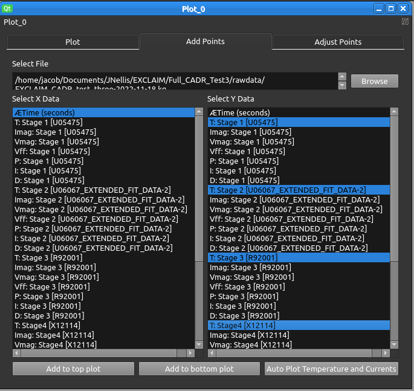When a data file is selected, the variables will be displayed and can be selected for plotting. The program will plot the entire array of selected data. A toolbar is displayed above the plot that allows the user to zoom, scroll, and save the plot. This is also where you can add a legend and label the x-y axis. The adjust points tab allows variable names, sizes, and colors to be adjusted.
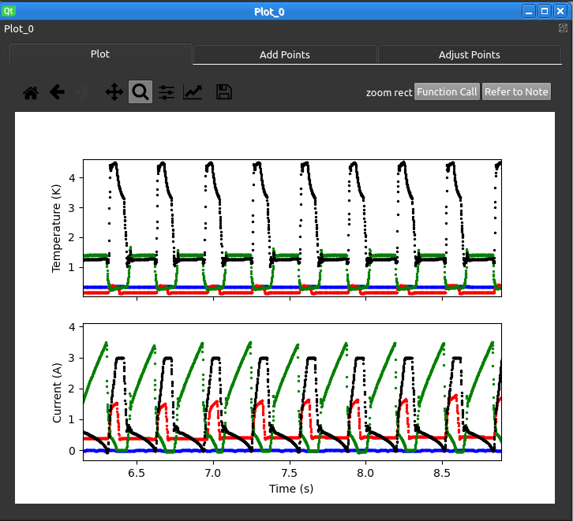In the case of a stacked plot, the x-axis of both plots will be linked when scrolling. To compare data from different days, multiple plots can be created in the data analysis workspace. This workspace can be saved and loaded at any time. At the moment, each user can only save one workspace at a time, so if you want to save multiple plots from multiple workspaces, you will need to use the save plot feature to put the plot into your note.
Analysis Features
When zooming in on a plot, it can be helpful to look at the notes taken within the timeframe being plotted. The ‘refer to note’ button will open a box displaying all notes taken within the period of time being displayed on the plot.
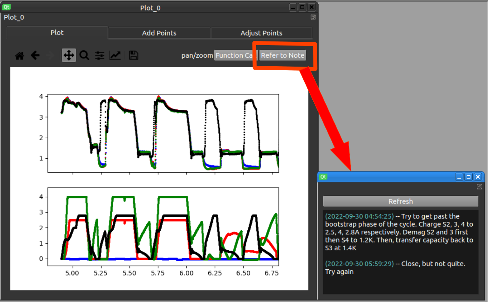The ‘function call’ button allows you to access the builtin library of CADR functions. Stage parameters can be defined in the configuration file, and temperature and current data can be used to plot entropy, heat capacity, and thermal resistance based on the stage definitions. These values can be calculated for your selected range on the plot, and will be appended to the list of variables in the ‘add points’ tab.
NOTE The stages are defined in the conf.py file in PostDAQ’s main directory. Users can define any number of stages and will appear in the program underneath that title. If you would like the program to automatically populate the relevant raw data from the text file when selecting a stage, you will need to have the stage’s name be the same as the stage tags you are using in Labquisition.
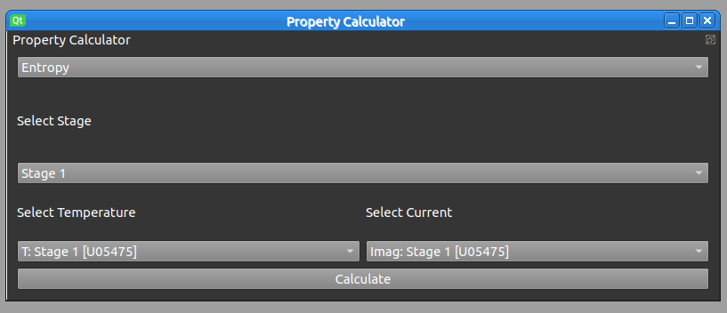The ‘function call’ button will also allow you to utilize a rather simple equation solver. The nice feature of this calculator is that it can solve implicit calculations, and the equations don’t need to be set up in any specific order. This is a similar utility to the more developed ‘Engineering Equation Solver’ program.
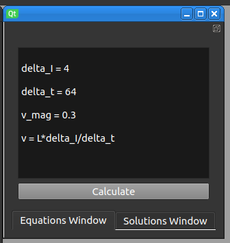IMPORTANT NOTE The data files must have the data (mm-dd-yyyy) in the file name. This is so that the program can determine the date of the data file. It will then use the timestamps created in the notes to determine which notes to display in the box.
Live plotting
One of the most useful features of PostDAQ is the ability to predefine relevant plots while taking notes. PostDAQ accomplishes this with variables called ‘TAGS’. When these are placed in the notes, the program will automatically generate and insert a plot into the note when using ‘file –> compile’. The syntax for a tag is as follows:
START_PLOT: <plot name> #This tells the program that a plot is about to be defined, and the timestamps below will be used to determine the xlims
(timestamp 1) #An example of a timestamp within the note
(timestamp 2) #An example of a timestamp within the note
TAG: <unit>: <channel>: <calibration>: <name> #This is the variable that should be included in the plot
TAG: XLABEL: <x-label>
TAG: INCLUDE LEGEND
END_PLOT #This tells the program that the plot is finished being defined
NOTE for code 552, the tag ‘QUICKPLOT’ can be used to automatically generate a plot with the current and temperature data. The program will automatically determine which data should be plotted based on the branches common naming conventions.
When the ‘file –> compile’ command is used, the program will convert the note into html format, running the command again will replace the previous html file. All of the relevant tags that can be applied to your note will appear in the bottom left hand window of the main window.
The plots that are called with this syntax will be numbered and saved into the plots directory as well. Using this feature inserts a plot similar to the following…
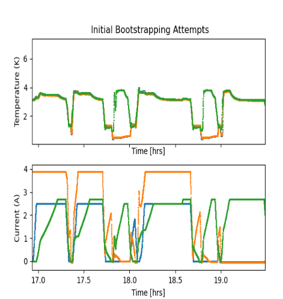Syncing Notes across Facilities
In the main.py file, there is a function in the homeWindow class called uploadNotes. This function can be setup to call the repository of your choice. The function is currently set up to call a repository on the local machine. Having a shared the repository allows for notes to be synced across multiple facilities. Using a github repository has the advantage of being able to see changes made to notes from different users.
Further information
This documentation is far from complete, but will hopefully allow you to get started using the program. If you have any questions, please email me at jnellis@postdaq.com and I will be happy to help.